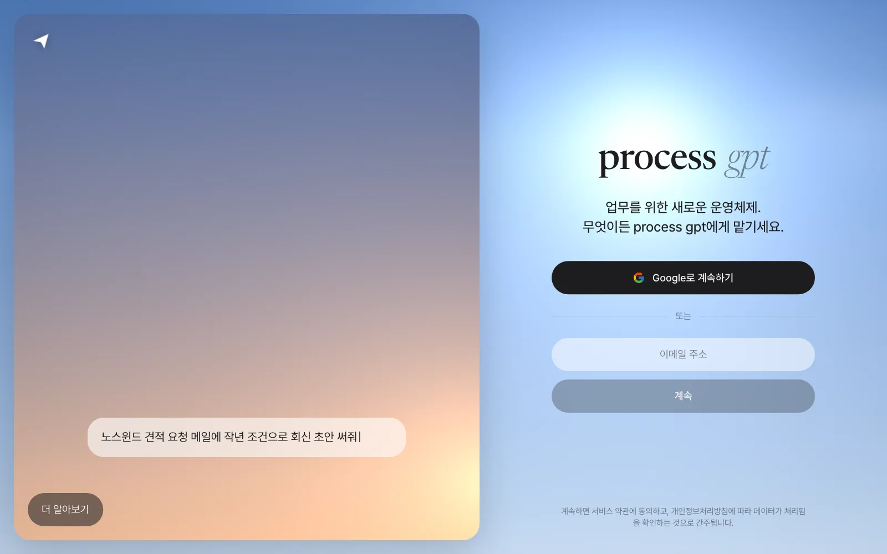
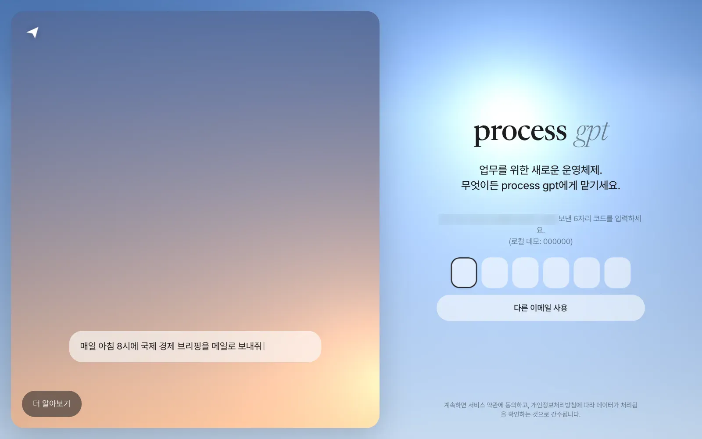
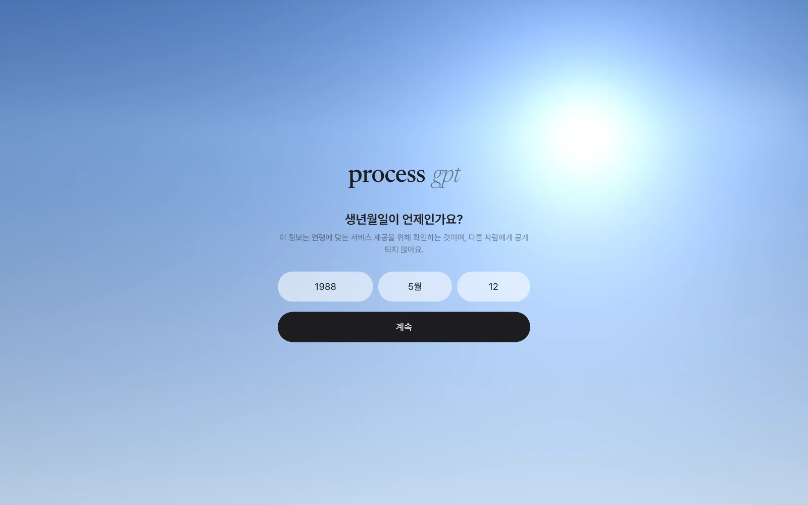
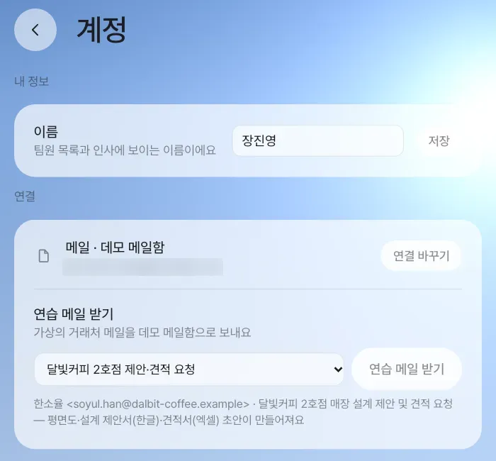
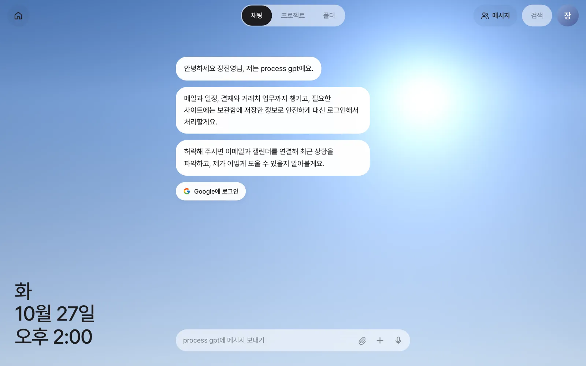
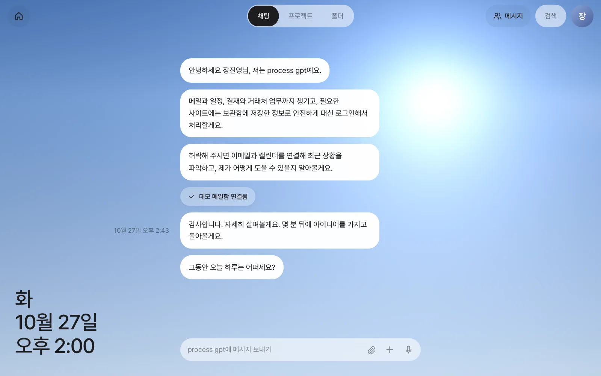

Docker가 있는 PC 한 대에 명령 한 줄로 Process GPT Lite를 설치하고, LLM 키를 넣고, 이메일로 받은 코드로 처음 로그인합니다. 로그인 뒤에 이어지는 첫 화면 안내(생년월일 → 인사 → 메일 연결)까지 마치면 2장부터 실습할 준비가 끝납니다.
무엇이 설치되나#
Process GPT Lite는 화면(웹 앱) 과 그 뒤에서 일하는 Process GPT 백엔드로 이루어져 있습니다. 설치 스크립트는 이 모두를 Docker 컨테이너로 내려받아 빌드하고, 데이터베이스를 준비하고, 첫 관리자 계정까지 만들어 줍니다.
| 구성 | 하는 일 |
|---|---|
| 웹 앱과 서버 | 지금부터 보게 될 화면. 채팅·홈·설정·보관함·브라우저 에이전트 |
| 로그인·저장소 | 이메일 로그인, 대화와 파일 저장 (오픈소스 Supabase의 최소 구성) |
| 에이전트 | 대화를 받아 실제로 일하는 AI 에이전트(deepagents)와, 에이전트가 파일을 다루는 격리된 작업 공간(샌드박스) |
| 문서 | 한글·워드·엑셀 문서를 만드는 문서 서버와, 화면 안에서 고치는 편집기(이음오피스) |
| 메일함 | 로그인 코드를 받는 설치 전용 메일함(mailpit) |
모든 것이 내 PC 안에서 돕니다. 바깥으로 나가는 것은 LLM 호출(설정한 API 주소)과, 연결했을 때의 메일·외부 서비스뿐입니다.
준비물#
| 항목 | 최소 | 권장 |
|---|---|---|
| Docker | Docker Desktop 4.x 또는 Docker Engine 24 이상 (Compose v2) | |
| Docker에 할당한 메모리 | 6GB (실행 중에는 약 1.5GB 사용) | 8GB 이상 (처음 빌드할 때) |
| CPU | 4코어 | 8코어 |
| 디스크 | 20GB (이미지 약 11GB와 빌드 캐시) | 30GB |
| LLM | OpenAI 호환 API의 주소·키·모델 이름 |
macOS, Linux, Windows(WSL2)에서 설치할 수 있습니다. Windows는 WSL2 안에 Docker Engine을 설치해 쓰는 것을 권장합니다.
설치하기#
터미널에서 한 줄을 실행합니다. 저장소를 ~/process-gpt-lite에 받고 설치 스크립트를 실행합니다.
curl -fsSL https://raw.githubusercontent.com/uengine-oss/process-gpt-lite/main/install/get.sh | bash
저장소를 직접 받아도 같습니다.
git clone https://github.com/uengine-oss/process-gpt-lite.git
cd process-gpt-lite/install
./install.sh
스크립트가 몇 가지를 묻습니다. 괄호 안이 기본값이고, 그냥 Enter를 누르면 기본값을 씁니다.
| 질문 | 예 | 설명 |
|---|---|---|
| LLM 주소(OpenAI 호환) | https://api.openai.com/v1 |
사내 모델 서버나 다른 OpenAI 호환 주소도 됩니다 |
| LLM API 키 | (입력해도 화면에 보이지 않습니다) | 비워 두면 채팅이 답하지 않습니다 |
| 기본 모델 | gpt-6-luna |
에이전트가 일할 때 쓰는 모델 |
| 빠른 모델(라우팅·분류) | 기본 모델과 같게 | 메시지 분류, 메일 분석처럼 짧은 판단에 쓰는 모델 |
| 첫 관리자 이메일 | admin@pgpt-lite.local |
설치가 끝나면 이 주소가 관리자 계정이 됩니다 |
처음에는 이미지를 빌드하느라 20~40분 걸립니다(이음오피스 편집기가 가장 오래 걸립니다). 끝나면 다음과 같은 요약이 나옵니다.
Process GPT Lite 가 준비됐습니다
주소 http://localhost:18080
관리자 admin@pgpt-lite.local
로그인 코드 이메일을 입력하면 코드가 메일함으로 갑니다 → http://localhost:18025
묻지 않고 설치하기
여러 대에 똑같이 설치할 때는 값을 환경 변수로 주고 --yes를 붙입니다.
bash
LLM_API_KEY=… LLM_BASE_URL=… LLM_MODEL=… ADMIN_EMAIL=… ./install.sh --yes
프로필 — 무엇까지 띄울까#
| 프로필 | 들어 있는 것 | 이럴 때 |
|---|---|---|
lite (기본) |
채팅·에이전트·문서 생성과 편집·공유 폴더·패널 앱·보관함·브라우저 에이전트 | 1~4부(혼자, 문서, 반복 줄이기, 팀)를 따라 할 때 |
full (실험) |
lite + 프로세스 엔진 + 외부 도구 연결 허브(MCP 허브) | 5부(프로세스) — 프로세스를 시작하고 진행할 때 ./install.sh --profile full |
mining (선택) |
위에 더해 프로세스 마이닝 | 반복된 일에서 프로세스를 추천받을 때 ./install.sh --with-mining |
craft (선택) |
ArtCraft 앱 다섯 개(도면·벡터·이미지·소리·영상)의 웹 편집기와 명령줄 도구 | 8장을 따라 할 때 ./install.sh --with-craft. 미리 빌드된 이미지(약 660MB)를 받아 넣습니다. 소스에서 직접 빌드하려면 .env에 LITE_CRAFT_IMAGE=(빈 값)를 넣습니다(처음 약 50분, Docker 메모리 12GB 이상) |
설치 번들에 빠진 것
현재 설치 번들에는 대화를 주제별로 나누는 대화 맥락 라우터와 판단 모델이 들어 있지 않습니다(GPU나 큰 메모리가 필요합니다). 쓰려면 따로 띄운 뒤 .env에 주소(CONTEXT_ROUTER_URL, JUDGE_URL)를 넣어 연결하세요. 연결하지 않아도 채팅은 되지만 4장의 “대화가 알아서 나뉘는” 기능은 꺼집니다. 도면·그림·소리·영상 편집기(ArtCraft, 8장)는 --with-craft로 함께 설치하고, Claude Code 작업실(23장)은 따로 설치합니다.
설정 파일 .env#
설치 폴더(install/)의 .env가 모든 설정을 담습니다. 처음 실행할 때 만들어지고, 권한은 본인만 읽을 수 있는 0600입니다. 데이터베이스 비밀번호, 로그인 토큰 서명 키, 보관함 마스터 키 같은 비밀 값은 스크립트가 무작위로 만들어 채우며 화면이나 로그에 찍지 않습니다. 업그레이드해도 그대로 유지됩니다.
자주 손대는 값은 다음과 같습니다.
| 키 | 기본값 | 뜻 |
|---|---|---|
LLM_BASE_URL, LLM_API_KEY |
OpenAI 주소, 빈 값 | 모든 AI 기능이 쓰는 LLM |
LLM_MODEL, LLM_FAST_MODEL |
gpt-6-luna, gpt-4.1-mini |
일하는 모델과 빠른 판단용 모델 |
LLM_USE_RESPONSES_API |
true |
에이전트가 OpenAI의 Responses API로 부름(추론 모델이 도구를 쓰려면 필요). OpenAI가 아닌 주소로 처음 설치하면 false |
LLM_EMBEDDING_MODEL |
text-embedding-3-small |
문서 검색용 임베딩 |
TRANSCRIBE_API_KEY |
빈 값 | 원격 회의 받아쓰기(OpenAI 음성 API 키). 비우면 화상 회의만 되고 자막·회의록 글은 없습니다 (16장) |
GOOGLE_CLIENT_ID, GOOGLE_CLIENT_SECRET |
빈 값 | Google 로그인과 Gmail 연결 (5장) |
SMTP_HOST 외 SMTP_* |
빈 값 | 로그인 코드를 실제 메일로 보낼 때. 비우면 번들 메일함으로 갑니다 |
DEMO_LOGIN |
0 |
1이면 고정 코드 000000도 받습니다 (아래 경고 참고) |
PUBLIC_URL, LITE_BIND |
http://localhost:18080, 127.0.0.1 |
다른 PC에서 접속할 때 바꿉니다 |
.env를 고친 뒤에는 ./install.sh를 다시 실행하면 바뀐 값으로 컨테이너가 다시 뜹니다. 데이터는 그대로입니다.
포트와 접속 주소#
| 포트 | 무엇 |
|---|---|
18080 |
앱 전체 — 웹 화면, 서버 API, 문서 편집기, 로그인이 모두 이 주소 하나로 들어옵니다 |
18025 |
번들 메일함 — 로그인 코드 메일을 여기서 읽습니다 |
기본으로는 이 PC에서만 열립니다(127.0.0.1). 18080을 다른 프로그램이 쓰고 있으면 ./install.sh --port 28080처럼 바꿉니다. 팀원이 다른 PC에서 접속하게 하려면 .env에서 PUBLIC_URL=http://<이 PC의 IP>:18080, LITE_BIND=0.0.0.0으로 바꾸고 SMTP를 설정한 뒤 ./install.sh를 다시 실행합니다. 번들 메일함은 이 PC에서만 열리기 때문입니다. 인터넷에 열 때는 앞에 HTTPS 리버스 프록시를 둡니다.
첫 로그인#
브라우저로 http://localhost:18080을 엽니다. 왼쪽 하늘 그림 위로 “노스윈드 견적 요청 메일에 작년 조건으로 회신 초안 써줘” 같은 예시 문장이 한 글자씩 써집니다. 이 앱에 무엇을 시킬 수 있는지 보여 주는 예입니다.

- 이메일 주소를 적고 「계속」을 누릅니다. 설치할 때 적은 관리자 이메일로 먼저 로그인해 보세요.
- 번들 메일함
http://localhost:18025를 열면 6자리 코드가 담긴 메일이 와 있습니다. SMTP를 설정했다면 실제 메일함으로 갑니다. - 코드 여섯 칸에 입력하면 바로 로그인됩니다. 붙여 넣기도 됩니다.

.env에 GOOGLE_CLIENT_ID·GOOGLE_CLIENT_SECRET을 넣었다면 「Google로 계속하기」로도 로그인할 수 있습니다. 넣지 않았으면 이 버튼은 “이메일로 계속해 주세요”라고 안내합니다.
데모 로그인은 닫힌 PC에서만
DEMO_LOGIN=1로 두면 아무 이메일이나 코드 000000으로 로그인됩니다. 시연이나 혼자 써 보는 PC에서만 켜고, 다른 사람이 접속할 수 있는 서버에서는 반드시 DEMO_LOGIN=0(기본값)으로 두세요. 끄려면 .env의 값을 0으로 바꾸고 ./install.sh를 다시 실행합니다. 소스에서 직접 띄운 개발용 서버는 반대로 데모 로그인이 기본으로 켜져 있으므로, server/.env에 PRO_DEMO_LOGIN=0을 넣어 끕니다. 이 튜토리얼의 사진은 데모 로그인을 켠 개발용 서버에서 연습용 계정으로 찍었습니다.
처음 한 번 — 첫 화면 안내#
처음 로그인하면 세 화면이 차례로 나옵니다. 한 번만 나오고, 다음부터는 바로 채팅 화면이 열립니다.
① 이름과 생년월일. 이메일 코드로 로그인했다면 먼저 “어떻게 불러 드릴까요?”라고 이름을 묻습니다. 팀원 목록과 인사에 보이는 이름이므로 실제 이름(이 튜토리얼에서는 장진영)을 적습니다. Google로 로그인해 이름이 이미 있으면 이 칸은 나오지 않습니다. 생년월일은 연령에 맞는 서비스를 위해 묻는 것이고 다른 사람에게 보이지 않습니다. 연도·월·일을 고르고 「계속」을 누릅니다.

이름은 나중에도 바꿀 수 있습니다
「설정 › 계정」 맨 위 「내 정보」의 이름 칸을 고치고 「저장」을 누르면 됩니다. 팀원 목록에도 바뀐 이름이 보입니다.

② 인사. “process gpt, 저는 당신만의 업무 운영체제처럼 생각하시면 돼요.”라는 문장이 써진 뒤 저절로 채팅 화면으로 넘어갑니다.
③ 비서의 자기소개와 메일 연결. 채팅에 비서가 세 문장으로 자기소개를 하고, 메일을 연결하자고 제안합니다. Google 로그인을 설정한 서버에서는 버튼이 「Google에 로그인」, 아니면 「메일 연결하기」로 보입니다.

버튼을 누르면 연결 방법을 고르는 창이 뜹니다. 이 튜토리얼에서는 「데모 메일함」을 고릅니다. 가상의 거래처 메일 다섯 통이 들어 있는 연습용 메일함이라, 실제 메일을 연결하지 않고도 다음 장들을 그대로 따라 할 수 있습니다. 실습에 쓸 메일은 나중에 「연습 메일 받기」로 더 받습니다(5장). Gmail과 IMAP 연결은 5장에서 자세히 다룹니다.

연결하고 1분쯤 지나면 비서가 메일을 읽고 채팅에 오후 브리프(아침이면 모닝 브리프)를 남기고, 홈에 할 일 카드 네 장을 올립니다.
멈추기·업그레이드·지우기#
| 하고 싶은 것 | 명령 (install/ 폴더에서) |
|---|---|
| 다시 시작 (몇 번 실행해도 안전) | ./install.sh |
| 새 버전으로 업그레이드 | ./install.sh --upgrade |
| 멈추기 (데이터는 남김) | ./install.sh --uninstall |
모두 지우기 (데이터·이미지·.env까지) |
./install.sh --uninstall --purge |
| 상태와 로그 | docker compose ps, docker compose logs -f server deepagents |
문제가 생기면#
| 증상 | 확인할 것 |
|---|---|
| “포트 18080 를 다른 프로그램이 쓰고 있습니다” | ./install.sh --port 28080 |
| 로그인 코드가 안 옴 | http://localhost:18025 메일함, docker compose logs auth |
| 채팅이 답하지 않음 | .env의 LLM_* 값, docker compose logs deepagents |
| 에이전트가 파일 작업에서 멈춤 | Docker 소켓 권한 (Linux는 사용자가 docker 그룹에 있어야 합니다) |
| 문서가 편집기에서 빈 화면 | docker compose logs office-host |
| 빌드가 메모리 부족으로 실패 | Docker 메모리를 8GB 이상(ArtCraft를 소스에서 빌드하면 12GB 이상)으로 늘리고, 다른 컨테이너를 잠시 멈춥니다 |
다음 장으로#
설치와 첫 로그인이 끝났습니다. 다음 장에서는 방금 연 화면 — 홈 카드, 채팅, 위쪽 막대, 설정 — 을 한 바퀴 둘러봅니다(2장).
확인 문제
- 설치 요약에 나온 주소로 로그인해, 홈에 할 일 카드가 생길 때까지 첫 화면 안내를 마치세요.
- 팀원 두 명(김민지, 박서연 역할)이 다른 PC에서 접속해야 한다면
.env에서 무엇을 바꾸고, 무엇을 추가로 설정해야 할까요? - 시연용 노트북에서 데모 로그인을 켰다가, 행사가 끝난 뒤 끄는 방법을 적어 보세요.
답
- 채팅에 “데모 메일함 연결됨”과 “오후 브리프”(또는 모닝·이브닝 브리프)가 보이고, 홈 버튼을 눌렀을 때 Reply·Pay·Release 같은 동사가 붙은 카드가 있으면 됩니다.
PUBLIC_URL=http://<이 PC의 IP>:18080,LITE_BIND=0.0.0.0으로 바꾸고./install.sh를 다시 실행합니다. 번들 메일함(18025)은 이 PC에서만 열리므로 팀원이 로그인 코드를 받을 수 있게SMTP_*를 설정해야 합니다. 인터넷에 열 때는 HTTPS 리버스 프록시도 둡니다..env에서DEMO_LOGIN=1로 바꾸고./install.sh→ 행사 뒤DEMO_LOGIN=0으로 되돌리고 다시./install.sh. 켜져 있는 동안은 누구든 아무 이메일로 로그인할 수 있다는 점을 기억하세요.